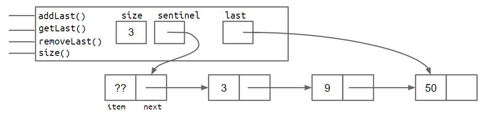

Starting from the copy of SLList.java provided to you in the lecture code repository, implement the method deleteFirst, which deletes the first element in your SLList. Don’t forget to maintain the three invariants discussed above.
Starting from the copy of SLList.java provided to you in the lecture code repository, implement a second constructor that takes in an array of integers, and creates an SLList with those integers. Again, remember to maintain your invariants.
publicclassSLList2{ privatestaticclassIntNode{ publicint item; public IntNode next;
publicIntNode(int i, IntNode n){ item = i; next = n; } }
private IntNode sentinel; privateint size;
publicSLList2(){ // initialize with no inputs sentinel = new IntNode(63, null); size = 1; }
publicSLList2(int x){ // initialize with a integer sentinel = new IntNode(63, null); sentinel.next = new IntNode(x, null); size = 1; }
publicSLList2(int[] x){ // initialize with an array size = 0; sentinel = new IntNode(63, null); for (int i = 0; i < x.length; i++) { // get the item from array inversely sentinel.next = new IntNode(x[x.length-i-1], null); size += 1; } }
/** Add the first item in the list */ publicvoidaddFirst(int x){ sentinel.next = new IntNode(x, sentinel.next); size += 1; }
/** Returns the first item in the list */ publicintgetFirst(){ return sentinel.next.item; }
/** * Returns the last item in the list * @return the last item */ publicintgetLast(){ if (sentinel.next == null) { return sentinel.item; } sentinel = sentinel.next; return getLast(); }
/** * Add an item to a list * @param args int x */ publicvoidaddLast(int x){ size += 1; IntNode p = sentinel;
/* Advance p to the end of the list. */ while (p.next != null) { p = p.next; } p.next = new IntNode(x, null); }
publicintsize(){ return size; }
publicintdeleteFirst(){ /* sentinel.next or sentinel.next.next could be null when size == 0 */ if (sentinel.next == null) { return -1; }
IntNode deleteNode = sentinel.next;
if (sentinel.next.next == null) { sentinel.next = new IntNode(-1, null); return deleteNode.item; } sentinel.next = sentinel.next.next; return deleteNode.item; }
publicstaticvoidmain(String[] args){ /** Test the constructor that takes in an array of integers*/ int[] arr = newint[]{1,2,3}; SLList2 L = new SLList2(arr); System.out.println(L.getFirst()); SLList2 L = new SLList2(1); L.addFirst(2); System.out.println(L.getFirst()); L.addFirst(3); L.deleteFirst(); System.out.print("Final: "); System.out.println(L.getFirst()); // L.addLast(100); // System.out.println(L.getLast()); // System.out.println(L.size()); } }
// Iterative // Reference: https://www.junhaow.com/studynotes/cs61b/cs61b%20p1.html publicvoidaddAdjacentIter(IntList2 p){ /* if p == null, p.rest will no longer execute */ if (p.rest == null) { /* size <= 1 */ return; }
/** * p.rest != null * p ends at the last node finally * loop through 1st ~ last 2nd node */ while (p.rest != null) { /* p ends at the last node */ if (p.first == p.rest.first) { /* merge */ p.first *= 2; p.rest = p.rest.rest; /* it's okay if it is null */ } else { p = p.rest; } } }
publicvoidaddLast(int x){ last.next = new IntNode(x, null); last = last.next; size += 1; } ... }
Exercise 2.3.1: Consider the box and pointer diagram representing the SLList implementation above, which includes the last pointer. Suppose that we’d like to support addLast, getLast, and removeLast operations. Will the structure shown support rapid addLast, getLast, and removeLast operations? If not, which operations are slow?

Answer 2.3.1:addLast and getLast will be fast, but removeLast will be slow. That’s because we have no easy way to get the second-to-last node, to update the last pointer, after removing the last node.
Week 2 - discussion 1
Implement square and squareMutative which are static methods that both take in an IntList L and return an IntList with its integer values all squared. square does this non-mutatively with recursion by creating new IntLists while squareMutative uses a recursive approach to change the instance variables of the input IntList L.
1 2 3 4 5 6 7 8 9
publicstatic IntList square(IntList L){ if (L == null) { return L; } else { IntList rest = square(L.rest); IntList M = new IntList(L.first * L.first, rest); return M; } }
1 2 3 4 5 6 7 8 9
publicstatic IntList squareMutative(IntList L){ IntList B = L; while (B != null) { B.first *= B.first; B = B.rest } return L; }